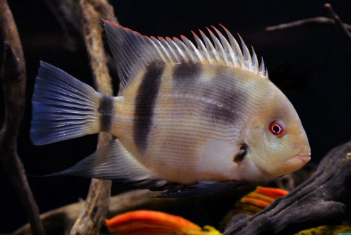

Systématique
- Ordre : Cichliformes
- Famille : Cichlidae
- Genre : Uaru
- Espèce : U. fernandezyepezi

Uaru fernandezyepezi est un grand cichlidé d'Amérique du Sud, originaire du bassin de l'Orénoque. Décrit relativement récemment (Stawikowski, 1989), il est beaucoup plus rare et exigeant que son cousin Uaru amphiacanthoides. Il est souvent surnommé "Uaru panda" en raison de ses motifs contrastés.
Le corps est haut, comprimé latéralement et de forme discoïdale. À l'âge adulte, il atteint une taille comprise entre 20 et 25 cm. Sa coloration est unique : un fond blanc crème à beige clair marqué de larges taches noires caractéristiques, notamment une grande zone sombre sur le milieu du corps et une autre à la base du pédoncule caudal. Les yeux sont souvent d'un rouge ambré intense. Les juvéniles possèdent un patron de coloration totalement différent, très sombre et tacheté, qui évolue radicalement lors de la croissance.
C'est un poisson grégaire qui doit être maintenu en groupe de 5 à 6 individus au minimum pour s'épanouir et réduire son stress. Bien qu'il soit pacifique envers les autres espèces, une hiérarchie stricte s'établit au sein du groupe. C'est une espèce réputée pour sa grande sensibilité aux variations de paramètres et à la qualité de l'eau.
En aquarium, il est calme mais nécessite un volume de nage conséquent. Il est connu pour sa tendance à consommer la végétation aquatique ; un décor composé de racines de bois flotté et de roches lisses est donc préférable. Comme les autres Uaru, il est intelligent et peut devenir très familier avec son soigneur.
Mode : Ovipare, pondeur sur substrat découvert.
La reproduction est jugée difficile en captivité. Le couple nettoie une surface plane (pierre ou racine) pour y déposer les œufs. Une particularité biologique partagée avec les Discus est la production d'un mucus cutané nutritif par les parents, dont les alevins se nourrissent durant les premiers jours suivant la résorption de la vésicule vitelline. Une eau extrêmement douce et acide, proche des conditions naturelles de "Blackwater", est indispensable pour le succès de l'éclosion.
Dimorphisme sexuel : Pratiquement inexistant. Les mâles et femelles sont identiques. La distinction n'est possible qu'au moment de la ponte par l'observation des papilles génitales (plus pointue chez le mâle, plus ronde chez la femelle).
Espérance de vie : Environ 8 à 12 ans en captivité si les conditions de maintenance sont optimales.
Uaru fernandezyepezi habite exclusivement les eaux noires (blackwater) du bassin du haut Orénoque et de la rivière Atabapo au Venezuela et en Colombie. Ces eaux sont caractérisées par une très forte concentration en tannins, une conductivité extrêmement basse et un pH très acide. Le substrat est généralement sablonneux, jonché de feuilles mortes et de nombreuses racines d'arbres immergées offrant des cachettes.
Répartition

Origine naturelle :
- Venezuela : Bassin de l'Orénoque, Rivière Atabapo.
- Colombie : Zones frontalières liées au système de l'Atabapo.
- Localité type : Rio Atabapo, près de San Fernando de Atabapo.
Paramètres de maintenance
Température : 27 à 30 °C (espèce thermophile).
pH : 4,5 à 6,5 (eau très acide indispensable).
GH : 1 à 5 °dGH (eau extrêmement douce).
Courant : Faible à modéré.
Volume conseillé : Minimum 600–800 L pour un groupe d'adultes compte tenu de leur taille et de leur comportement social.
Régime alimentaire
Régime : Omnivore à forte tendance végétarienne.
Dans la nature, il consomme des éponges d'eau douce, des détritus végétaux et des fruits tombés. En aquarium, il accepte les nourritures sèches de qualité, mais doit impérativement recevoir un apport végétal quotidien : épinards, courgettes, poivrons, ou granulés à base de spiruline. Une carence en végétaux peut entraîner des maladies intestinales.